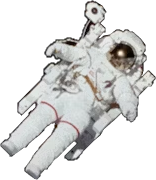

Uranus består av vann, metan og ammoniakkvæsker over en liten steinete kjerne. Atmosfæren er laget av hydrogen og helium, som Jupiter og Saturn, men den inneholder også metan. Metanet gjør Uranus blå.
Uranus har også svake ringer. De indre ringene er smale og mørke. De ytre ringene er klart fargede og lettere å se. Lik Venus, roterer Uranus i motsatt retning av de fleste andre planeter. Og i motsetning til noen annen planet, roterer Uranus på siden.
Uranus er omgitt av et sett av 13 ringer. Uranus er en iskjempe (i stedet for en gasskjempe). Den består hovedsakelig av flytende ismaterialer over en fast kjerne.
Selv om den er lengre fra solen, er Neptun faktisk kaldere enn Uranus. Uranus' atmosfære er en av de kaldeste i solsystemet med en minimumstemperatur på -224 grader Celsius. Denne kjølige temperaturen er delvis på grunn av mangelen på indre varme i motsetning til andre gassgiganter.